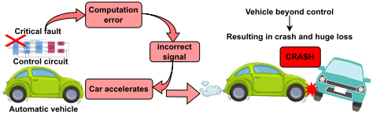
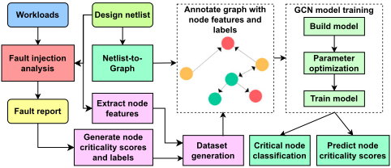
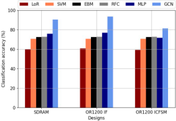
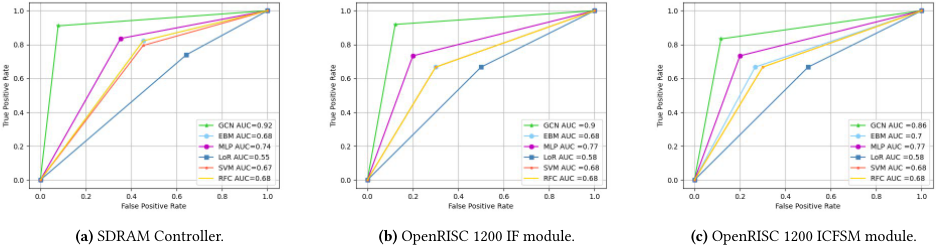
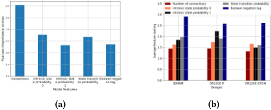

基于图学习的故障关键性分析：增强 E/E 系统的功能安全
论文针对传统 fault injection (FI) 在设计复杂度增长下面临资源与时间开销大、且无法识别可能导致功能失效的关键组件的不足，提出基于 Graph Convolutional Network (GCN) 的故障关键性预测框架。方法上将门级 netlist 构建为图，提取 number of connections、intrinsic state/transition probability 等节点特征，仅用部分节点上的 FI 仿真结果训练 GCN 分类器，再经回归模型输出 0~1 的 criticality score，并用 GNNExplainer 解释单节点预测。在 SDRAM controller 与 OR1200 的 IF、ICFSM 模块上，分类准确率最高 93.7%、AUC 最高 0.92，显著优于 MLP、RFC、SVM 等基线；回归分数与分类结果相关性超过 85%。该工作为团队基于功能 workload 的 fault grading 与 FuSa TFMEA/FMEDA 论证提供了 ML 加速与关键度量化排序的新思路。
传统基于 fault injection (FI) 与仿真的 E/E 系统可靠性评估方法，在设计复杂度增长下面临资源需求与时序开销挑战，依赖资源密集的 application specific workload 生成，且无法识别可能导致功能失效的关键组件；同时缺乏对节点关键程度的系统性量化评分体系。论文目标是仅对设计的一部分做 FI，即可预测其余电路节点的关键性并给出关键度评分，从而节省故障关键性分析的资源与时间。
将门级 netlist 遍历构建为图，提取四类节点特征：number of connections、intrinsic state probability、intrinsic transition probability、标识门是否执行逻辑取反的 Boolean tag；用 Synopsys Design Vision 综合得到门级网表，用 Cadence Xcelium 做 simulation-based FI，按多 workload 聚合各节点被标记为 'Dangerous' 的比例得到 criticality score，并以阈值（实验取 0.5）标注 Critical/Non-critical；用 PyTorch + torch geometric 构建 GCN（grid search 调参）做节点分类，训练集/验证集按 80-20 划分；去掉输出层 logSoftmax 并将输出维度从 2 改为 1 得到回归模型，预测连续 criticality score；最后采用 GNNExplainer 做模型无关的 post-hoc 可解释性分析，聚合单节点特征重要性得到全局特征排名。
SDRAM controller：GCN 关键节点分类准确率 90.34%，AUC 0.92；对比的现有分类器（MLP、LoR、RFC、SVM、EBM）最高仅 77%
OR1200 IF 模块：准确率 93.7%，AUC 0.9；现有分类器最高 78%
OR1200 ICFSM 模块：准确率 81.03%，AUC 0.86；现有分类器最高 72%
回归预测的 criticality score 与分类结果呈显著相关（超过 85% correlation）；例如 SDRAM controller 中节点 ND4_U233 被分类为 critical，预测分数 0.7（高于阈值 0.5）
可解释性分析：'Number of Connections'（score 3.06）与 'Intrinsic State Probability of 0'（score 1.75）在单节点解释中得分最高，且在三个设计中被一致排名为影响分类决策的最关键特征
相对已有仅利用节点属性做 FI 加速预测、忽略节点间连接等结构信息的 ML 方法，本工作将电路图结构（邻接关系）纳入 GCN 学习；作者声称首次对节点关键度做回归分析，生成 0~1 连续 criticality score 以支持加固资源的优先级排序；并引入 GNNExplainer 可解释性分析，识别影响故障关键性的设计特征（如 gate 类型与连接关系）。
相关度级别：high
命中能力域：2.5 功能安全与安全机制 | 2.6 Fault simulation/Z01X/TFMEA
理由：论文核心是 gate-level simulation-based fault injection、按 workload 聚合的 fault grading（criticality score 与 detection coverage）以及面向 ISO 26262 FuSa 的关键节点识别与量化排序，直接命中团队 2.6 域'基于功能 stimulus/pattern 的 fault injection、fault grading、detectability 分析与 FuSa TFMEA/FMEDA 论证关联'的核心技术，并支撑 2.5 域的安全分析与论证工作；其 GCN+回归+可解释性的自动化思路对团队 2.7 域的 AI 辅助流程亦有方法借鉴价值。团队在 LPDDR/HBM4/UCie 等 IP 上开展 functional pattern fault grading 与 TFMEA 论证时，FI 仿真规模是主要瓶颈，该方法的'部分 FI 训练、全设计预测'范式可显著降低开销。
建议动作：深入精读并做内部分享
基于图学习的故障关键性分析，用于增强电气/电子（E/E）系统的功能安全
Sanjay Das 1 ∗ , Shamik Kundu 1 , Pooja Madhusoodhanan 2 , Prasanth Viswanathan Pillai 2 , Rubin Parekhji 2 , Arnab Raha 3 , Suvadeep Banerjee 3 , Suriyaprakash Natarajan 3 和 Kanad Basu 1
1 美国德克萨斯大学达拉斯分校（University of Texas at Dallas），美国德克萨斯州；2 德州仪器（Texas Instruments），印度班加罗尔；3 英特尔公司（Intel Corporation），美国加利福尼亚州
电气与电子（E/E）系统日益增长的复杂性凸显了在高保障性环境中采取保护措施以确保功能安全（FuSa）的必要性。这需要对脆弱节点进行识别与加固，以提升系统在任务关键场景下的可靠性。传统上，E/E系统可靠性的评估依赖于故障注入（FI）技术和仿真。然而，FI在应对不断攀升的设计复杂度方面面临挑战，包括资源需求和时序开销。此外，它在识别可能导致功能失效的关键组件方面也存在不足。为应对这些挑战，我们提出了一种基于机器学习（ML）的框架，用于预测硬件设计中的关键节点。该流程首先从设计网表构建图，为训练图卷积网络（GCN）奠定基础。GCN模型利用图节点属性、节点标签和边连接来学习并预测电路中的关键节点。在同步动态随机存取存储器（SDRAM）控制器、OpenRISC 1200（OR1200）模块等多种设计上进行的评估中，该模型识别脆弱电路节点的准确率最高可达93.7%。此外，我们引入了可解释性分析来解读单个节点的预测结果。该分析甄别出影响设计中故障关键性的关键设计因素。而且，据我们所知，我们首次执行了回归分析以生成节点关键性评分，对关键性程度进行量化，从而能够将资源优先分配给关键节点。
关键词：故障注入分析，图卷积网络
随着设计复杂度的不断提升、特征尺寸的不断缩小以及上市时间压力的日益加剧，硬件系统越来越容易受到各种潜在失效的影响。此类失效主要源于硬件中显现的故障。这催生了诸如 ISO 26262 等功能安全（FuSa）标准，作为检测和管理故障的技术框架，其首要目标是实现并维持安全的运行状态 [2, 6]。关键电路中的故障有可能在现场运行期间引发灾难性后果 [8][11][4]。例如，自动驾驶汽车控制电路中显现的故障可能导致车辆加速失控，
*通讯作者：Sanjay Das（Email: sanjay.das@utdallas.edu）。本工作得到半导体研究公司（SRC）的资助（SRC GRC Task: 3192.001）。
允许免费制作本作品部分或全部内容的数字或纸质副本以供个人或课堂使用，前提是这些副本并非出于营利或商业优势的目的而制作或分发，且副本在首页带有本声明及完整的引用信息。本作品中第三方组件的版权必须得到尊重。对于所有其他用途，请联系所有者/作者。
DAC '24，2024年6月23–27日，美国加利福尼亚州旧金山
ACM ISBN 979-8-4007-0601-1/24/06
© 2024 版权归所有者/作者所有。
https://doi.org/10.1145/3649329.3656498

进而引发潜在事故甚至造成人员伤亡（如图1所示）。此类关键故障可能出现在电路的任何部分。结构设计特性以及故障所在位置在决定这些故障的关键性程度方面起着至关重要的作用，原因在于故障传播的有效性与这些结构特性密切相关。因此，不仅要评估故障的影响，还必须结合故障在设计中所处的位置来考量其关键性。这种全面的方法对于确保任务关键型应用中的 FuSa 而言必不可少。
为此，本文提出一种新颖的基于机器学习（ML）的框架，用于识别对关键故障表现出较高易感性的电路节点。由于图是一种适合封装电气/电子（E/E）电路关系特性的数据结构，我们的第一步是将电路设计转换为图结构。随后，利用图卷积网络（GCN）进行故障关键性分析，因为 GCN 专为处理图结构数据而设计，并在训练和推理阶段同时考虑节点自身的属性及其相邻节点的属性 [12]。
传统上，对电气/电子（E/E）系统可靠性的评估一直依赖于故障注入与仿真方法学 [7]。然而，面对日益增长的设计复杂度，这些方法面临重大障碍，包括巨大的时间开销。此外，这些方法严重依赖资源密集型的流程，例如面向特定应用的工作负载生成，并且无法识别设计中可能导致功能失效的关键组件。考虑到现代设计日益增长的复杂度，不仅要确定某个电路节点是否关键，还要建立一个系统化的评分体系来量化其关键性程度，这一点变得至关重要。例如，虽然两个节点可能都被认为是关键的，但其中一个可能表现出更高的关键性，这意味着在加固方面具有更高的优先级。遗憾的是，传统故障分析方法学在这方面同样存在不足，因此需要探索替代方法来满足这一新兴需求。
我们的首要目标是开发一种机器学习（ML）分类器，该分类器利用从设计的一个子集获得的传统故障注入结果，并运用这些知识对设计其余部分中的电路节点进行分类，从而降低对整个电路执行传统故障注入流程的必要性。
这种精简的方法在故障关键性分析过程中节省了资源和时间。随后，进行可解释性分析，其目的不仅是解读模型预测结果，还有助于识别关键的设计特征（例如门类型和连接关系），阐明在故障显现时这些特征对电路节点关键性的贡献。此外，为了指示电路节点的关键性级别，我们引入了回归分析，在分类之后为节点分配关键性评分。因此，该方法提供了电路故障关键性图景的整体视图。
本工作的主要贡献如下：
本文其余部分的组织结构如下。第2节提供背景信息。第3节阐述所提出的方法学。第4节展示所提出框架的效率。最后，第5节对全文进行总结。
在本节中，我们将阐明用于阐释我们基于机器学习（ML）的电气/电子（E/E）电路故障关键性分析方法的基本背景信息。
图卷积网络（GCN）是一种功能强大的机器学习（ML）框架，其应用范围涵盖社交网络、交通预测，乃至需要处理不规则数据结构的电子设计自动化（EDA）问题 [5][10]。这些网络从所提供的图输入中吸收信息，该输入由与节点和边相关联的属性加以增强。在训练过程中，这些属性借助由边连接所促成的消息传递在节点之间传播。其主要目标是获得学习某一函数的能力，该函数依赖于记为 𝐺 = ( 𝑉, 𝐸 ) 的给定图中的特征。一个维度为 𝑁 × 𝐹 的特征矩阵 𝑋 包含了图的结构信息，其中 𝑁 表示图中的节点数量，𝐹 表示每个节点的输入特征数量。邻接矩阵 𝐴 通过捕获节点之间的连接信息，充当图结构特性的表示。该模型以特征矩阵 𝑋 和邻接矩阵 𝐴 作为输入，并给出矩阵 𝑌 (= 𝑁 × 𝑂 ) 作为输出，其中 𝑂 表示节点输出特征。GCN 中的每一层均可表示为一个非线性函数，如公式 1 所详述。此处，𝐻 [ 𝑖 ]、𝐻 [ 𝑖 + 1 ] 表示第 𝑖 层和第 𝑖 + 1 层的特征表示。𝑊 𝑖 表示第 𝑖 层中的权重，𝜎 为激活函数。𝐴 ∗ 为输入图的归一化邻接矩阵。

为解决邻接矩阵 𝐴 中的约束，采取若干步骤：将单位矩阵 ( 𝐼 ) 加到 𝐴 上，从而为图引入自环。此外，对 𝐴 进行归一化以确保所有行之和等于 1，从而保持特征向量的尺度。通常为此采用对称归一化。因此，GCN 层可表示为公式 2，该式遵循公式 1，只是将 𝐴 ∗ 替换为归一化邻接矩阵 ( 𝐴 ∗ = ˆ 𝐷 - 1 2 ˆ 𝐴 ˆ 𝐷 - 1 2 )。
故障注入（FI）是一种被广泛采用的技术，用于评估电路可靠性并评估故障传播的可能性，而故障传播可能导致错误和系统失效。FI 涵盖三大主要类别：物理故障注入、基于仿真的故障注入和软件故障注入 [7]。为避免代价高昂的重新流片，在设计流程中尽早应用基于故障注入的可靠性分析至关重要。因此，基于仿真的故障注入因其成本效益高而成为主流方法 [1]。该方法在网表级进行，无需对网表源代码进行任何修改。然而，需要注意的是，该方法可能极其耗时，因为对复杂电路进行穷尽式分析可能需要大量的 FI 实验和可观的仿真时间。通过利用机器学习（ML）算法基于经验数据构建预测模型，有望加速 FI。为此，现有研究提出了一种基于 ML 的方法来加速基于仿真的故障注入分析 [9]。然而，这些技术仅专注于利用节点属性进行预测，而忽略了设计中蕴含的关键结构信息，包括节点之间的连接关系。这些结构要素对于理解故障关键性及其对整体设计的影响至关重要。
在本节中，我们详细阐述所提出的基于ML的框架，用于对电路节点进行分类（如图2所示）。首先，该框架构建电路的图表示。随后，从设计中提取节点特征。接着，通过在设计上执行的故障注入实验构建数据集。之后，利用图信息和该数据集训练图卷积网络（GCN）模型。最后，采用训练好的模型进行关键节点分类，并利用回归进行分数预测。此外，还进行了可解释性分析，以解释模型的预测结果。
2
在此过程中，通过系统地遍历设计网表并收集每个节点（即网表中的一个门）的相关信息，从设计网表构建图。节点特征包括该节点的结构和功能信息，例如连接数、固有状态概率和转换概率。这些节点特征在训练GCN模型的过程中起着关键作用。节点特征定义如下：
3.1.1 连接数：与某个节点或门相连的扇入和扇出总数被定义为连接数。该属性具有重要意义，原因在于连接数较多的节点在发生故障时可能极为关键，因为故障效应很可能从该节点传播到与其相连的组件。
3.1.2 固有状态概率。固有状态概率表示门的输出处于特定状态（0或1）的可能性。当门对某一特定逻辑状态表现出强烈倾向时，引起状态转换的故障的影响会减小。相反，处于每种状态的概率相等（∼ 0.5）的门会使电路更容易受到故障影响，因为它们容易在状态之间来回振荡。因此，固有状态概率是评估电路对故障易感性的关键属性。
3.1.3 固有转换概率：固有转换概率表示节点的输出从一个状态转换到另一个状态的可能性，具体而言，是在输入发生变化时从0转换为1或反之的可能性。该属性至关重要，因为它决定了门在其输入受到故障作用时改变输出状态的可能性。概率越高，表明故障传播的可能性越大，进而可能导致功能错误。
3.1.4 门是否对逻辑取反的布尔标签：该标签指示门逻辑是否执行取反操作（例如，NAND门的标签为1，而AND门的标签为0）。该特征至关重要，因为取反门由于晶体管数量更少而对电路故障更具鲁棒性，并且由于取反过程而对噪声具有抗性。
为了获得用于训练所提出的图卷积网络（GCN）模型的真值，我们通过针对多种工作负载的故障注入（FI）仿真建立了一个全面的数据集。
3.2.2 数据集生成：在故障注入分析之后，利用3.2.1节中生成的故障注入报告，构建了一个节点关键性数据集。这些源自多种工作负载的报告被汇总起来，以推导出每个节点的关键性评分。该评分可作为所考察节点关键性水平的指标。随后，基于预先设定的关键性评分阈值，将节点划分为两个不同的组别，即“关键”（Critical）和“非关键”（Non-critical），作为我们
门级设计网表 D；工作负载；故障注入报告；工作负载数量 N；关键性阈值 𝑡ℎ
1: 𝑁𝑜𝑑𝑒𝐶𝑟𝑖𝑡𝑖𝑐 ← 𝑒𝑚𝑝𝑡𝑦𝐷𝑖𝑐𝑡 ()
2: 𝑁𝑜𝑑𝑒𝐿𝑎𝑏𝑒𝑙 ← 𝑒𝑚𝑝𝑡𝑦𝐷𝑖𝑐𝑡 ()
3: for 𝑤𝑜𝑟𝑘𝑙𝑜𝑎𝑑 in 𝑊𝑜𝑟𝑘𝑙𝑜𝑎𝑑𝑠 do
4: 𝑅𝑒𝑝𝑜𝑟𝑡 ← 𝐹𝑎𝑢𝑙𝑡𝐼𝑛𝑗𝑒𝑐𝑡𝑖𝑜𝑛 ( 𝐷,𝑤𝑜𝑟𝑘𝑙𝑜𝑎𝑑 )
5: for 𝑛𝑜𝑑𝑒,𝑙𝑎𝑏𝑒𝑙 in 𝑅𝑒𝑝𝑜𝑟𝑡 do
6: if 𝑙𝑎𝑏𝑒𝑙 == ' 𝐷𝑎𝑛𝑔𝑒𝑟𝑜𝑢𝑠 ' then
7: 𝑁𝑜𝑑𝑒𝐶𝑟𝑖𝑡𝑖𝑐 [ 𝑛𝑜𝑑𝑒 ] ← 𝑁𝑜𝑑𝑒𝐶𝑟𝑖𝑡𝑖𝑐 [ 𝑛𝑜𝑑𝑒 ] + 1
8: end if
9: end for
10: end for
11: for 𝑘𝑒𝑦 in 𝑁𝑜𝑑𝑒𝐶𝑟𝑖𝑡𝑖𝑐.𝑘𝑒𝑦𝑠 () do
12: 𝑁𝑜𝑑𝑒𝐶𝑟𝑖𝑡𝑖𝑐 [ 𝑘𝑒𝑦 ] ← 𝑁𝑜𝑑𝑒𝐶𝑟𝑖𝑡𝑖𝑐 [ 𝑘𝑒𝑦 ]/ 𝑁
13: if 𝑁𝑜𝑑𝑒𝐶𝑟𝑖𝑡𝑖𝑐 [ 𝑘𝑒𝑦 ] ≥ 𝑡ℎ then
14: 𝑁𝑜𝑑𝑒𝐿𝑎𝑏𝑒𝑙 [ 𝑘𝑒𝑦 ] ← 1
15: else
16: 𝑁𝑜𝑑𝑒𝐿𝑎𝑏𝑒𝑙 [ 𝑘𝑒𝑦 ] ← 0
17: end if
18: end for
19: return : 𝑁𝑜𝑑𝑒𝐶𝑟𝑖𝑡𝑖𝑐, 𝑁𝑜𝑑𝑒𝐿𝑎𝑏𝑒𝑙
节点分类评估。故障关键性阈值的确定取决于具体的应用场景和所规定的容错标准，因此由各利益相关方自行决定。在4.1节所述的实验设置中，我们选取0.5作为关键性评估的阈值。该评分意味着，如果某节点中的故障在超过50%的时间内导致功能错误，则该节点被视为关键节点。
算法1展示了实验数据集的生成过程。首先，实例化两个空字典（NodeCritic、NodeLabel），分别用于记录节点关键性评分和标签（第1-2行）。接着，执行故障仿真实验并生成报告（第3-4行）。随后，将每个节点的关键性分类汇总到一个字典中（第5-10行）。在此基础上，将每个节点汇总得到的关键性评分与预先定义的阈值（𝑡ℎ）进行比较，关键性达到或高于该阈值的节点被标记为1，否则标记为0（第11-17行）。最后，将关键性评分和已标记的节点作为输出（第18行）。
本节介绍我们如何构建并优化图卷积网络（GCN）模型，用于关键节点分类和关键性评分预测。
3.3.1 模型构建：第3.1节中构建的图，连同节点特征、关键性评分和标签，作为训练GCN模型的基础，该模型由 𝐺 𝑙 个图卷积层组成。输入层具有 𝐹 个神经元，其中 𝐹 为图节点的特征维度。我们将该模型定义为一个函数 𝐺𝐶𝑁 ( 𝑥 )，对于输入 𝑥 ∈ 𝑅 𝑛 产生输出 𝑦 ∈ 𝑅 2。𝐺𝐶𝑁 ( 𝑥 ) 的输出是一个二维向量，包含各类别 ( 𝐶 ∈ { 0 , 1 } ) 的概率 𝑃 𝑐。最终预测类别 𝑦 𝑐 通过应用 𝑎𝑟𝑔𝑚𝑎𝑥 函数得到：𝑎𝑟𝑔𝑚𝑎𝑥 ( 𝐺𝐶𝑁 ( 𝑥 )) = 𝑦 𝑐。
3
算法2 Graph Convolutional Network Development
为了评估训练后的图卷积网络（GCN）模型的节点分类性能，将一组未见过的节点连同其各自的特征输入到该模型中，以生成类别预测。在将电路节点归入关键组和非关键组之后，进行回归分析以估计它们各自的关键性水平。该过程产生介于 0 到 1 之间的连续分数，其中 0 表示最低关键性，1 表示最高关键性。例如，当两个节点被标记为“关键”时，分类器不会对二者加以区分；相反，在回归分析中，这两个节点可能各自拥有不同的关键性分数，例如 0.55 和 0.75，这有助于区分它们在故障发生时所构成的关键性程度。为了预测这些关键性分数，我们对 GCN 分类模型进行了轻微修改。我们从输出层中移除 logSoftmax 激活函数，并将输出维度从 2 改为 1，从而能够生成用于关键性预测的连续回归分数。该修改后的模型经过多个 epoch 的训练，随后被部署用于预测节点关键性分数。
在这一步骤中，我们的主要目标是为图卷积网络（GCN）模型生成的关于关键节点分类的预测提供有意义的解释。为了有效实现这一目标，我们采用了一种与模型无关的事后（post-hoc）方法 GNNExplainer，该方法已在文献 [13] 中证明了其有效性。该方法旨在构建子图 𝐺 𝑠 ⊆ 𝐺（即控制数据流图，Control Data Flow Graph）及相应的节点特征 𝑋 𝑠 = 𝑥 𝑖 | 𝑣 𝑖 ⊆ 𝐺 𝑠，并强调它们对模型节点分类的关键贡献。GCN 模型训练完成后，便被用于为训练过程中未曾遇到的节点集合生成预测。为了解释这些单个预测，需要使用 GCN 模型、特征矩阵、相应的目标节点以及迭代次数来构建一个解释器（explainer）对象。随后，解释器会为每个特征及相应的子图生成重要性分数，从而为理解节点被分类为“关键（Critical）”还是“非关键（Non-critical）”提供洞见。我们通过分析所有电路节点的单个节点解释，构建整个模型的全局特征重要性图。为此，我们对所有单个预测的节点特征分数进行聚合。类似地，我们依据特征分数对特征进行排序，并聚合所有节点的排序结果（参见公式 3，其中 𝑛 为节点数量）。
通过对这些特征分数的评估与排序，我们识别出排名靠前的特征的重要性及其对模型整体性能的影响。
本文利用三种设计对所提出的 GCN 框架进行评估：一个 SDRAM 控制器，以及来自 OR1200 架构的两个模块（指令取指（IF）和指令缓存有限状态机（ICFSM））。考虑到这些设计之间存在显著差异，它们为评估我们所提出的框架提供了稳健的基础。为了构建数据集，我们首先使用 Synopsys Design Vision 将寄存器传输级（RTL）设计映射为门级综合网表。接下来，我们使用 Cadence Xcelium 工具
表 1. GCN 网络配置。
| Layer.Layer | Type.Type | Parameters.In | Parameters.Out | Values.Values |
|---|---|---|---|---|
| 1 | Graph convolutional layer | Input | 16 | - |
| 2 | Rectified Linear Unit | - | - | - |
| 3 | Graph convolutional layer | 16 | 32 | - |
| 4 | Rectified Linear Unit | - | - | - |
| 5 | Dropout Layer | - | - | 0.3 |
| 6 | Graph convolutional layer | 32 | 64 | - |
| 7 | Rectified Linear Unit | - | - | - |
| 8 | Graph convolutional layer | 64 | 2 | - |
| 9 | Log Softmax | 2 | 2 | - |
| Layer.Layer | Type.Type | Parameters.In | Parameters.Out | Values.Values |
4

进行故障注入实验 [3]。该工具向设计网表中注入故障，并使用各种输入向量（工作负载）进行电路仿真。随后会生成详细的故障检测报告，记录不同工作负载下的故障关键性与检测覆盖率。利用这些故障报告，我们构建了一个全面的数据集，其中包含故障发生期间节点关键性的相关信息。这些数据随后被用于计算节点关键性分数，而该分数对于将节点标记为“关键（Critical）”或“非关键（Non-Critical）”至关重要。该数据集构成了训练和评估 GCN 框架的基础。对于每个设计，我们将数据集按 80-20 的比例分别划分为训练集和验证集。
GCN 模型基于 PyTorch 及 torch geometric 包实现，并按照表 1 中详述的规格进行构建。
4.2.1 Node classification: In this experiment, we employ the trained GCN model to classify circuit nodes in the aforementioned designs. First, we elaborate on the design complexities of the circuits, following which we validate the trained model and compare its performance with existing ML-techniques, such as MLP, LoR, Random Forest Classifier (RFC), Support Vector Machines (SVM), and Explainable Boosting Machine (EBM) [5]. Figure 3 presents the classification performance of all the ML-models along with our proposed approach when evaluated on the same workloads. The corresponding ROC curves are plotted in Figure 4.
Case 1: SDRAM controller: A SDRAM controller serves as an interface that manages the communication between the computer's central processing unit (CPU) and the SDRAM memory modules. The trained GCN achieves an accuracy of 90.34% in critical node classification for the design. Existing classifiers furnish up to 77% classification accuracy as demonstrated in Figure 3, thus, providing, significantly degraded results compared to our proposed GCN model. Moreover, Figure 4a illustrates that the GCN model provides the best ROC curve with the highest AUC score of 0.92, demonstrating the efficacy of the proposed approach.
Case 2: OR1200 IF module: The OR1200 IF module is accountable for providing the processor with instructions to be executed. It consists of an instruction cache and the control logic to calculate the address of the instruction to be fetched. The trained GCN furnishes 93.7% accuracy for node classification. In comparison, the existing classifiers furnish upto 78% accuracy (Figure 3), thus, providing, significantly worse results compared to the GCN model. Moreover, Figure 4b illustrates that the GCN model provides the best ROC curve with the highest AUC score of 0.9.
Case 3: OR1200 ICFSM module: The OR1200 ICFSM module constitutes an essential component of a cache controller that furnishes all the signals to a processor, data array, and the primary memory. The state machine guarantees that the signals are established at the appropriate timings. The trained gcn classifier achieves an accuracy of 81.03% in identifying critical nodes. The existing classifiers furnish upto 72% accuracy (Figure 3), which is significantly lower compared to our proposed GCN-based approach. The GCN model also provides the highest AUC score of 0.86 (Figure 4c).
Interpreting GCN predictions: The GCN model predictions are interpreted in terms of feature importance scores as illustrated in Figure 5(a), where the feature scores for a randomly selected

Performance Metrics: Model performance is assessed using various metrics: accuracy, the receiver operating characteristic (ROC) curve, and the area under the ROC curve (AUC). Accuracy calculates the percentage of correct predictions among all predictions. The ROC curve plots true positive rate (TPR) against false positive rate (FPR). TPR represents the accuracy of correctly identifying class 1 (critical) predictions, calculated by dividing the number of correct class 1 predictions by the total of correct class 1 predictions and incorrect class 0 predictions. Conversely, FPR indicates the rate of incorrectly identifying class 1 (critical) predictions, determined by dividing the number of incorrect class 1 predictions by the total of incorrect class 1 predictions and correct class 0 predictions. AUC, or Area under the ROC Curve, quantifies the total area beneath the ROC curve. Higher AUC values signify better model performance and the value ranges between 0 and 1.
5
| Design.Design | Nodes.Nodes | Criticality classification.Criticality classification | Feature importance scores.Number of connections | Feature importance scores.Intrinsic state probability of 0 | Feature importance scores.Intrinsic state probability of 1 | Feature importance scores.State transition probability | Feature importance scores.Boolean inverting tag | Criticality score.Criticality score |
|---|---|---|---|---|---|---|---|---|
| ND2_U393 | Non-critical | 2.24 | 2.11 | 0.83 | 1.12 | 1.05 | 0.41 | |
| SDRAM Controller AO3_U373 | Critical | 1.91 | 2.05 | 1.49 | 1.93 | 1.3 | 0.56 | |
| AO2_U419 | Non-critical | 5.96 | 3.61 | 1.74 | 2.34 | 2.47 | 0.29 | |
| ND4_U233 | Critical | 2.25 | 2.57 | 1.14 | 1.4 | 1.09 | 0.7 | |
| IV_U112 | Non-critical | 2.12 | 1.92 | 0.94 | 1.24 | 0.88 | 0.44 | |
| OR1200 IF module AO3_U143 | Critical | 1.97 | 2.05 | 1.14 | 1.34 | 1.05 | 0.61 | |
| AO2_U194 | Non-critical | 2.56 | 2.25 | 1.06 | 1.16 | 0.98 | 0.41 | |
| NR4_U129 | Critical | 2.26 | 2.65 | 1.27 | 1.32 | 1.08 | 0.56 | |
| ND2_U121 | Critical | 1.85 | 2.14 | 0.87 | 1.06 | 1.28 | 0.51 | |
| OR1200 ICFSM module AO3_U156 | Critical | 2.54 | 2.46 | 1.34 | 1.29 | 0.88 | 0.7 | |
| NR2_U211 | Non-critical | 4.16 | 3.04 | 1.12 | 2.08 | 2.02 | 0.34 | |
| NR4_U165 | Critical | 2.24 | 2.46 | 1.04 | 1.26 | 0.89 | 0.55 |
| Design.Design | Nodes.Nodes | Criticality classification.Criticality classification | Feature importance scores.Number of connections | Feature importance scores.Intrinsic state probability of 0 | Feature importance scores.Intrinsic state probability of 1 | Feature importance scores.State transition probability | Feature importance scores.Boolean inverting tag | Criticality score.Criticality score |

node (from the SDRAM controller design) is captured. Notably, the features 'Number of Connections' (with score of 3.06) and 'Intrinsic State Probability of 0' (with score of 1.75) emerge with the higher scores, indicating their pronounced significance in the prediction process. The feature importance scores for several nodes from all three designs are captured in Table 2. To comprehensively understand the relevance of various node features in shaping the overall behavior of the model, we rank the feature importance scores and aggregate their respective rankings for all node explanations ass depicted in Figure 5(b). The figure, consolidating results for all three designs highlight that 'Number of Connections' and 'Intrinsic State Probability of 0 and 1' are consistently ranked as crucial features contributing to the model's decision in node classification.
4.2.2 Node Criticality Score Prediction: Following the classification of nodes, we employ the GCN regressor to predict their respective criticality scores within each design. To maintain brevity, we have randomly sampled a limited number of nodes from each design and documented their class assignments, feature importance scores and the predicted criticality scores in Table 2. Notably, the predicted scores align with the classification outcomes, as demonstrated in the table. For example, within the SDRAM controller design, node ND4_U233 has been classified as 'critical', and the corresponding criticality score predicted is 0.7, surpassing the defined threshold of 0.5. It is to be noted that these score predictions are not confined solely to the presented instances but extend uniformly across all nodes within all three designs with highconformity with the classification model. Therefore, our framework not only excels in the classification of circuit nodes, but also offers a mechanism for quantifying criticality scores.
本文提出了一种基于机器学习（ML）的框架，旨在加速 E/E 系统中的故障注入分析。该框架构建一个图来表示设计的门级网表。基于故障仿真结果，为图的节点分配关键性评分和标签。随后，在电路的一部分上训练 GCN 模型，并在设计中其余节点上进行测试。通过在大型商用电路上进行广泛评估，所提出的框架在关键节点分类方面可达到高达 93.7% 的准确率。此后，在分类完成后，通过回归分析生成节点关键性评分，且预测结果与预测类别表现出显著（超过 85%）的相关性。此外，通过引入可解释性分析，该框架成功识别出影响设计中故障关键性的关键设计特征。因此，本研究提供了对电路关键性全貌的透彻理解，为提高硬件设计的鲁棒性提供了宝贵的见解。
1 条证据未在原文中核对到